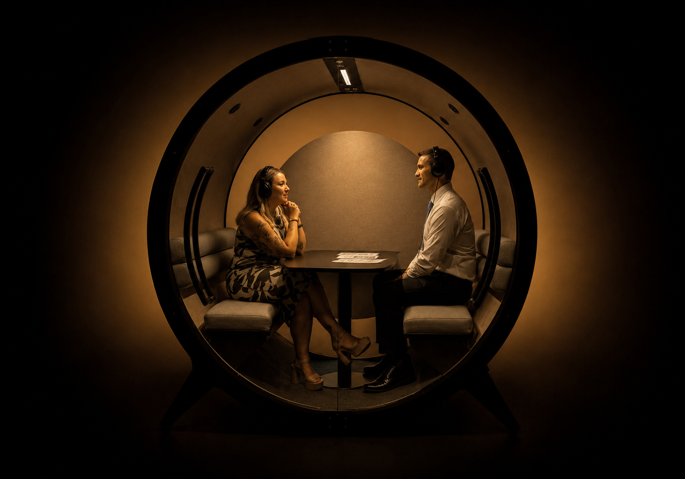
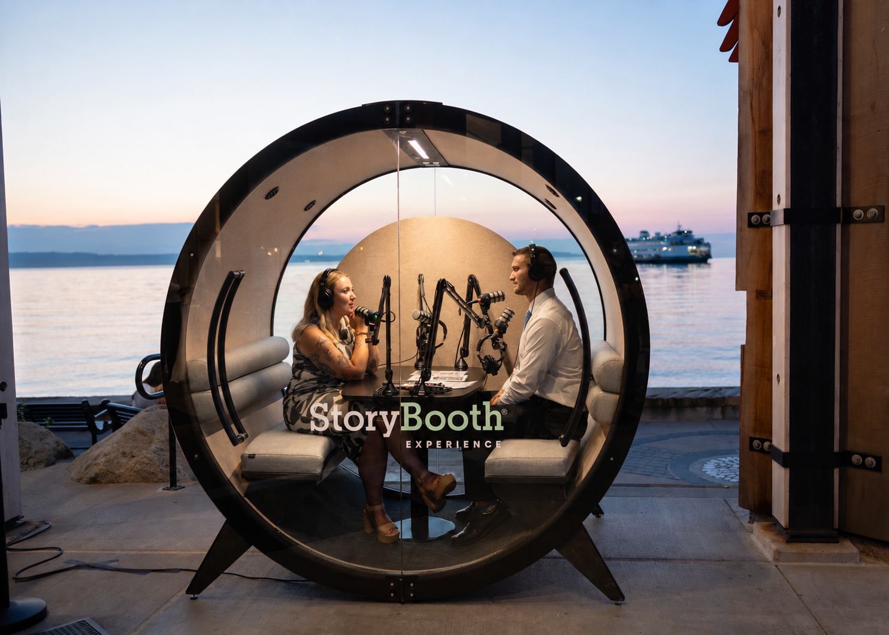
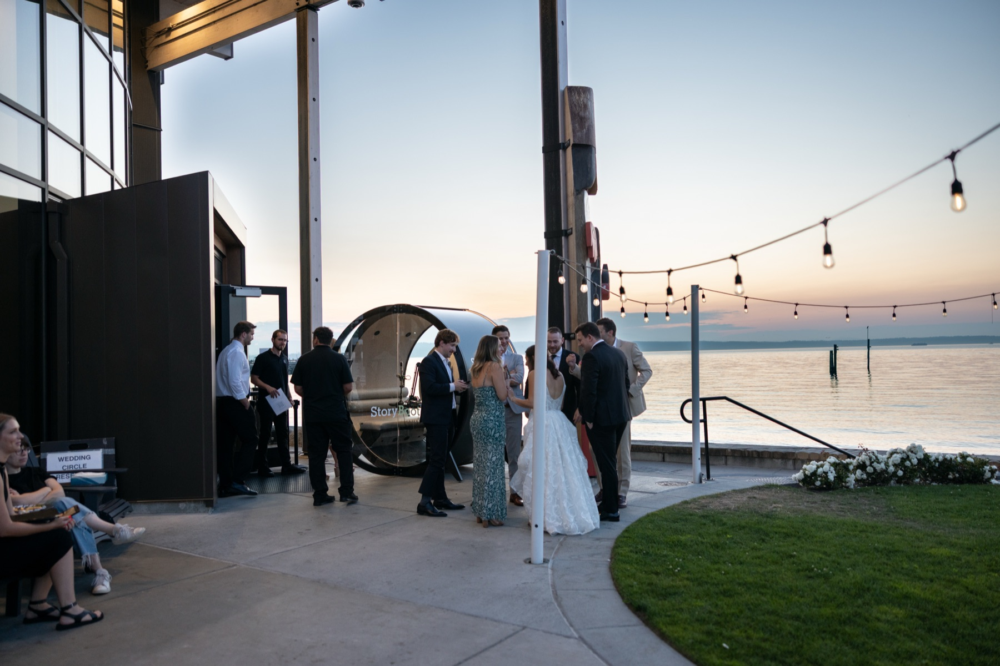

Two people, one conversation, and the warmth between them.
Placeholder copy — swap for verified StoryBooth language. Two seats, two mics, and a view worth talking in front of. Wherever it lands, people lean in and start telling the truth.
